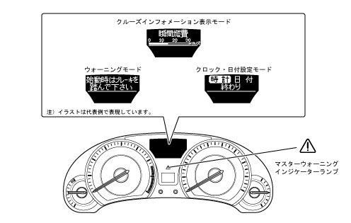

| Multi-information Display |
| ● |
The multi-information display uses a liquid crystal dot matrix display to show various modes using numbers, characters, vehicle symbols, etc.
|
| ● |
A master warning indicator light that illuminates or blinks in conjunction with the warning mode display of the multi-information display is provided in the combination meter.
|
 Labels in this picture: Cruise information display mode / Instant fuel economy 10 クルーズインフォメーション表示モード 瞬間燃費 10 Clock/date setting mode / Clock / Date / End クロック・日付設定モード 時計 日付 終わり Warning mode ウォーニングモード Note) The illustration is a representative example. 注）イラストは代表例で表現しています。 Master Warning Indicator Light マスターウォーニングインジケーターランプ |
 Multi-information Display Indications and Functions Multi-information Display Indications and Functions
|
| Display Switching Operation
|

| Multi-information Display Flow
|
 Multi-information Display Operation Multi-information Display Operation
|